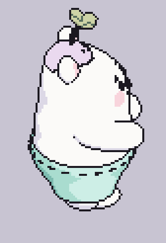
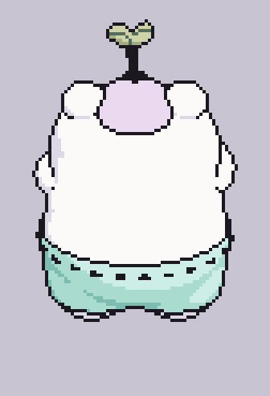
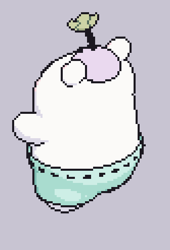
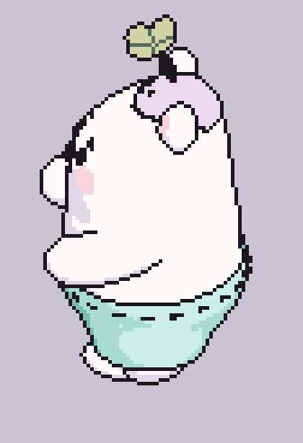
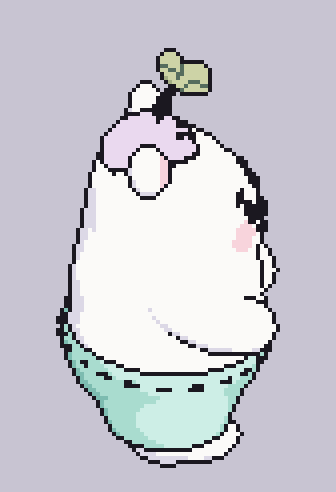
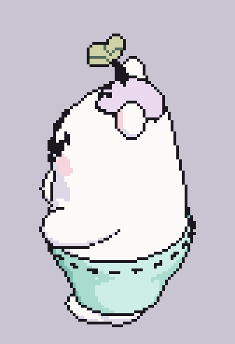

Bear, stage s
dangle
S, 16 frames loop
SE, 16 frames loop

E, 16 frames loop
NE, 16 frames loop

N, 16 frames loop

NW, 16 frames loop

W, 16 frames loop
SW, 16 frames loop
land_squash
S, 10 frames
SE, 10 frames
E, 10 frames
NE, 10 frames
N, 10 frames
NW, 10 frames
W, 10 frames
SW, 10 frames
dizzy
S, 30 frames
SE, 30 frames

E, 30 frames

W, 30 frames
SW, 30 frames
morning_stretch
S, 30 frames
SE, 30 frames
E, 30 frames
W, 30 frames
SW, 30 frames
evening_yawn
S, 28 frames
SE, 28 frames
E, 28 frames
W, 28 frames
SW, 28 frames
tap_glass
S, 20 frames
SE, 20 frames
SW, 20 frames
sheet (3x)